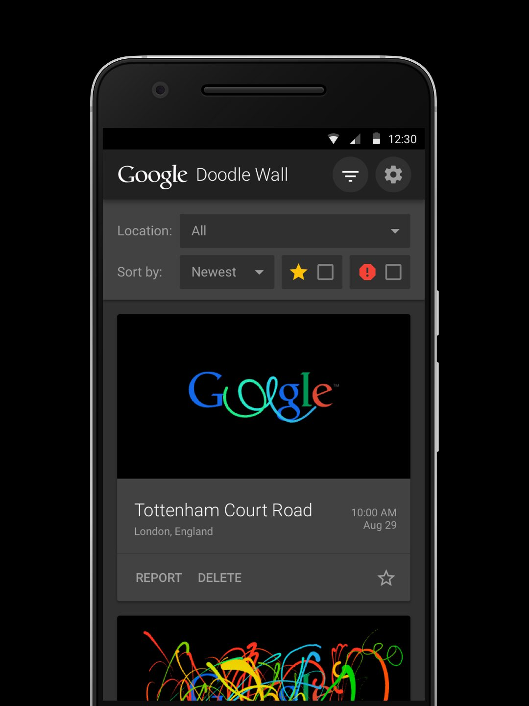
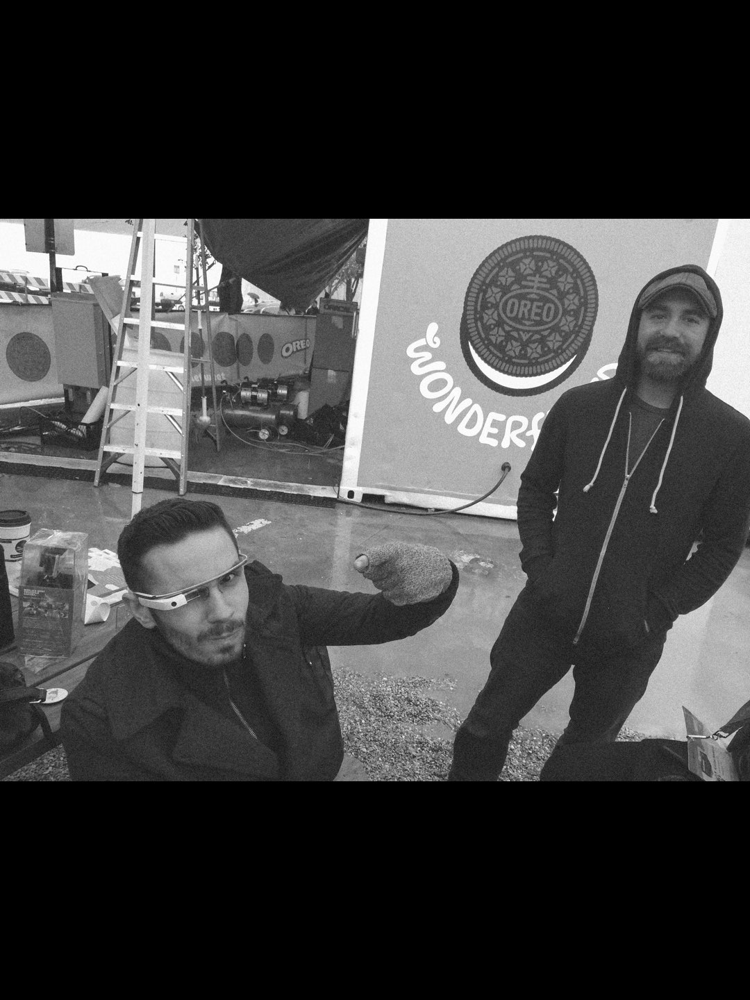
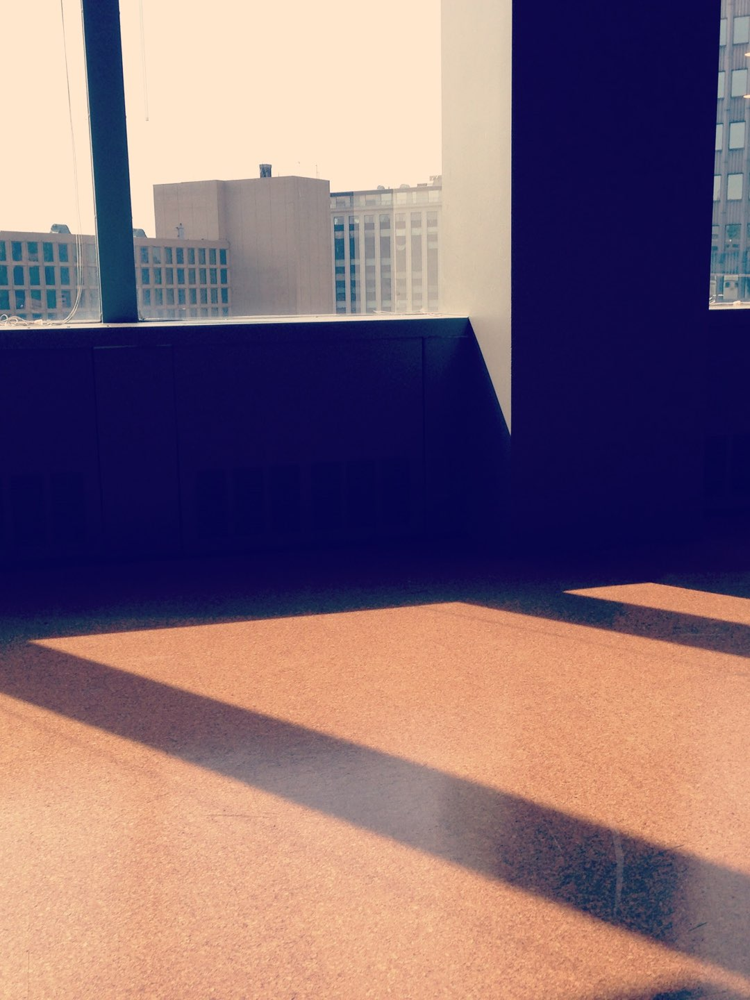

I make content and experiences for every screen. My work is a mix of design, code, and animation.
Deeplocal
2015
Today
At Deeplocal, I work with a talented, multidisciplinary team to invent new ways for people to experience brands. Our work is digital. Our work is physical. Usually, it’s both. Clients include Google, Netflix, and Nike.
A bartender bot powered by Google Assistant. üçπ

Make It was a collaboration with the Brand Team at Netflix. The idea was to create new and interesting ways for people to hack their Netflix experience—whether the idea came from users, Netflix engineering, our creative team—or, most often, all three.
I had the opportunity to work on the majority of the Make It projects (four and counting) where I helped define and execute how we conveyed the campaign’s narrative on the web.

My friends Jordan and Erin started a non-profit called Garment. The project aims to empower women recovering from an eating disorder by providing them with new, size-less clothing, individualized for their healthy bodies and lifestyles.
I helped solidify their visual brand, design their site, and build a tool to help them curate wardrobes for their clients.


A web app that gives users real time parking data for downtown garages.


Jordan, Chad, and I shipped the first Deeplocal reel.


My friend Courtney started a menswear and lifestyle shop called Kinsman.


Freeform (formerly ABC Family) celebrated the notion of transformation by turning fans’ social media DNA into one-of-a-kind, 3D art and wearable designs.
We used an algorithm to analyze fans’ tweets and partnered with 3D artists to translate the results into unique bracelet designs. Fans received an animated GIF of their design, and thousands of randomly selected winners received a 3D-printed edition.


MAYA Design
2013
2015
At MAYA, I worked along side engineers and researchers to solve problems big and small. I learned user research, usability testing, and rapid prototyping. Clients included StoryCorps, Oreo, MSA, and Amway.
StoryCorps.me empowers people to record and preserve conversations about their lives using StoryCorps’ style interviews.
Our team was asked to help strategize, brand, design, and build the product for its alpha release. I focused on designing a web app to house the interview library, user profiles, and interviewing resources. I also worked on defining the visual language of the platform.
Before its release, StoryCorps.me was named Listen.

At SXSW Interactive, MAYA worked with Oreo to create an interactive installation where festival goers could “Eat the Tweet”. Powered by Twitter, our prototype vending machines enabled SXSW attendees to create and eat custom Oreos based on trending social conversations.



I helped brand and launch a MAYA company called AoT. It’s an innovation accelerator for startups that specializes in disruptive trends like the internet of things and additive manufacturing.

